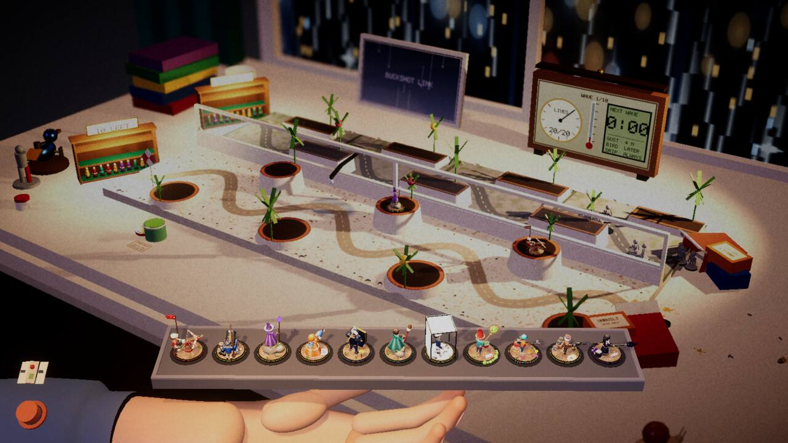
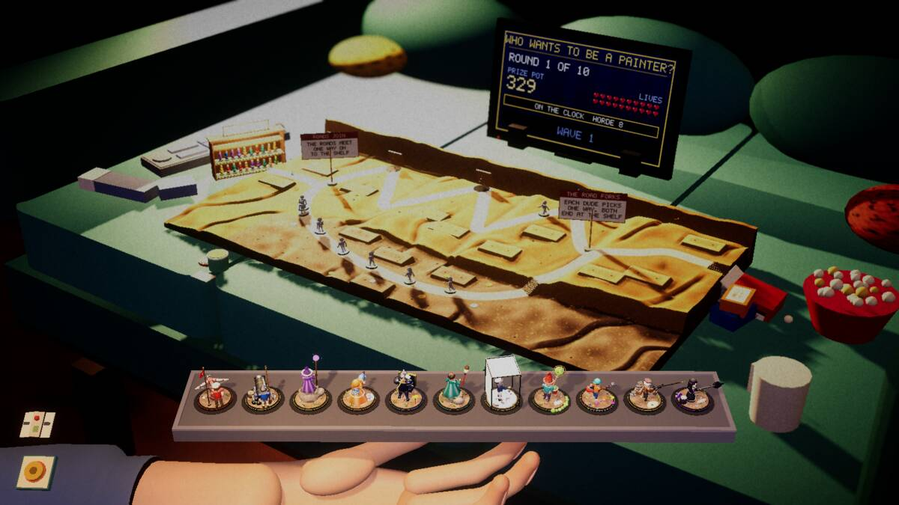
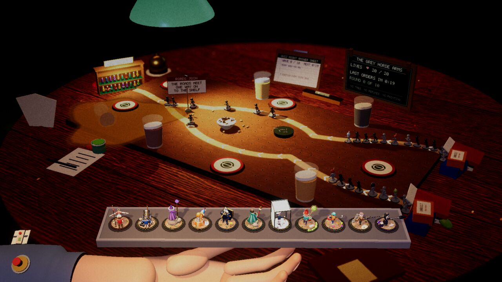

Devlog ·
Ten tables ship and none of the new ones is balanced: the workers were told to stop tuning and merge
The last five tables went in within seventy minutes of each other, after bot games that ran for hours; one worker found eight enemies frozen at the start of its road, and another found its hazards were never the problem.
The couch, the workbench, the pub table, the bathroom floor and the window sill are merged. The game now has ten tables. Nothing in the record shows a person playing any of the seven new ones.
Eight grunts at speed zero
The bathroom floor has a drain in the middle. An enemy knocked into it goes down the pipe and comes back out at the entrance.
The worker's first whole-table bot games stalled at wave 1 or 2 "for twenty-odd minutes". It added a trace line to its own table, which showed "eight grunts standing at the very start of the road with their speed multiplier at 0.00". If a tower's shove landed in the same frame that the drain was carrying an enemy, the shared movement code read that enemy's speed as zero and never worked it out again.
The worker may only edit its own folder, so it worked around the fault there and filed a report. The report says the kitchen table's turntable "has the same exposure". The next run walked all ten waves.

The hazards were not the problem
The window sill has two lanes, one inside the glass and one on the ledge outside, with wind, rain and a bird that lands once a wave.
The bot lost at wave 4 to 6 on every layout the worker tried, "even with the hazards switched off. That showed the hazards were not the problem: the two lanes were 30 cm apart and the bot's towers each covered only one."
It bent the roads into S-shapes and raised the pots and window boxes beside the glass so that towers there see both lanes. It also found that the bird "ate 0 in four visits because it was landing on empty road", and made it aim at the lane the horde is on. Lives at the end of wave 3 went from 4 to 20.
The worker notes the cost: towers shooting over the glass "weakens 'each lane needs its own defence'". After ten bot games the table still lost on wave 8.

A stall that was not one
The pinned enemy from the last post turned up again. The bathroom worker traced one for 1,400 seconds while its health went from 21 to 0.1; that game took 8,750 seconds of table time. The workbench worker met it as soon as it made its table harder.
The couch worker saw a game that "looked stalled for a long time". Its hazard is a gap in the cushions that swallows enemies and puts them out further on or further back, and that run had it set harsh. The log showed that no enemy had fallen in during that wave: "it was the bot's card dives on a loaded machine". The worker shortened the setbacks anyway.
On the pub table, the worker's own sideways drift for the wobbly leg "first let walkers wander off the board" until it capped the drift at 2.2 cm.

Told to stop
Each table was meant to leave a competent bot with 8 to 12 of its 20 lives. Checking that takes a ten-wave game, and with seven workers sharing one computer the games took hours. The lead told the workers to stop tuning and merge.
Where they stopped:
- Workbench: the bot won with all 20 lives. Its vice crushed 263 enemies in one game.
- Bathroom floor: 13 lives. A harder setting lost at wave 9.
- Couch: 12 lives after wave 5, then stopped by hand. No game reached the end.
- Window sill: lost on wave 8.
- Pub table: 10 lives, then 9. A third game on the same build was down to 4 at wave 8.
The lead's follow-up says none of the seven met the target. By the pub worker's own numbers, the pub did, twice.
Each table also has a joke rule that a run of several tables can switch on. Three workers reported that a table cannot read the rules of the run it is in. The pub's quiz night is therefore always on, and the window sill's and the bathroom's rules arrive by workarounds that were never tried inside a run. The workbench's "Measure Twice" was meant to draw tower ranges as rulers and round them down to the centimetre. It ships as 6 percent less range.
On the start screen each table is a postcard. The lead's follow-up says the ten are fanned on top of each other with most of them hidden. The button that names the table reads "able: Workbenc".

What nobody has checked yet
- No person is recorded playing any of the seven new tables, and no table worker ran its table in the web version.
- The couch's pennants, added to mark the gap's mouths after the last screenshots: "they compile", and nobody has looked at them.
- The workbench vice knocking out a tower: no bot ever built in its slot.
- The bathroom's fog blocks sight at any distance, not past four tiles as designed.
- The window sill passes its check at one window shape and failed three items at another.
- The pinned enemy and the frozen-speed fault are reported, not fixed.